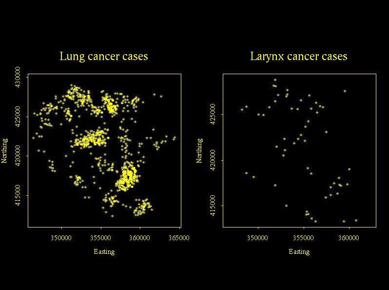
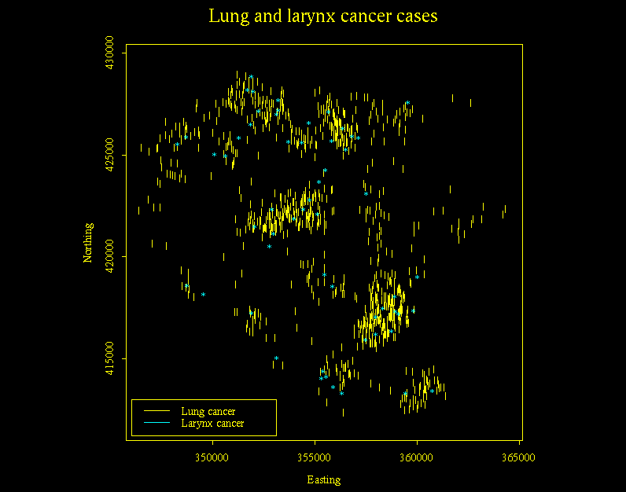
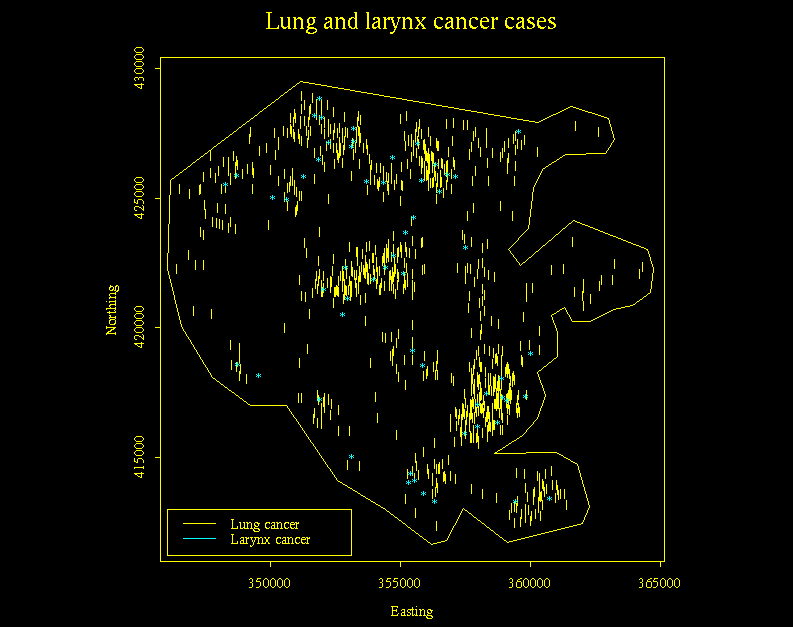
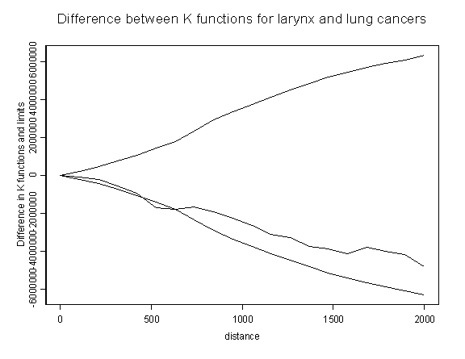

Analysis of Lancashire larynx and lung cancer data
in R/ S/ S-plus and with the SPLANCS module
You Jinsheng,
Tong
Yin, Guy Serbin, Mingyo
Chung, Katya Saraeva,
Vasile
Turcu
 Introduction
Introduction
The Lancashire lung and larynx cancer data set contains
population, lung and larynx cancer data sets. These data sets, when read
into statistical software packages such as R
(GNU S), S and S-plus, and used in conjuction with the SPLANCS module,
may be analyzed to determine whether or the concentrations of certain cancers
are due to local environmental or these occur randomly in the population.
An overview of the steps that we took may be viewed here.
Exportation of data from INFO-MAP
and formatting
The initial step to performing the data analysis is to
download the data set from the INFO-MAP software package and format such
that it may be read by your statistical software. Instructions
on how to do this may be found here.
Reading the data into statistical
software package
Two data files are to be used in the analysis of this
data set (Bailey and Gatrell, 1995):
-
Larnyxy.txt - Larynx cancer data
-
LungCancer.txt - Lung cancer
data
The basic commands used are the following
(Rowlingson and Diggle, 1993):
Reading in the data from a text file(remember that
both files are need to be used):
cases _ spoints (scan ("cases.xy"))
Plotting a dot plot:
pointmap (cases)
Drawing and adding a polygon:
cases.poly _ getpoly()
polymap (cases.poly, add=T)
We need to define a distance scale at which to evaluate
the K-functions. As a rule, it is useful only to evaluate the K-function
up to about one-third of the linear extent of the polygon. At distances
larger than this the K-function estimate becomes inefficient (we (and the
book) suggest the range from 0 to 2000). The S function seq is used to
generate a vector of distances for the K-function.
s _ seq (from = 0, to = 2000, len = 20)
Kcase _ khat (cases, cases.poly, s) (the same
for the "control" data set)
SEcc _ secal (cases, cont, cases.poly, s)
Now the difference between the K-functions can be plotted
on a graph together with an approximate 95% confidence envelope calculated
as +/-2SE:
matplot (s, 2*cbind (SEcc, - SEcc), type = "l", lty =
1, col = 1)
lines (s, Kcase - Kcont, lwd = 2)
title ("K-function difference and +/- 2SE envelope")
The code that we used:
1. Load the library of splancs:
> library(splancs)
2. Read in the point datasets:
Larynx.pts<-spoints(scan("/home/ssa8/Larnyxy.txt"))
LungCancer.pts<-spoints(scan("/home/ssa8/LungCancer.txt"))
3. Draw the point map of the datasets (two ways- separate maps
for each data set and one with both data sets):
a) 2 maps:
par (mfrow = c (1,2))
par (pty = "s")
pointmap (LungCancer.pts)
title(main="Lung cancer cases", xlab="Easting", ylab="Northing")
pointmap (Larynx.pts)
title(main="Larynx cancer cases", xlab="Easting", ylab="Northing")

b) 1 map, 2 data sets:
par (mfrow = c (1,1))
par (pty = "s")
pointmap(LungCancer.pts,pch="|", col = 1)
pointmap(Larynx.pts, add = T, pch = "*", col = 2)
title(main="Lung and larynx cancer cases", xlab="Easting", ylab="Northing")
legend(x=346000, y=413000, c("Lung cancer", "Larynx cancer"), lty = 1, col = 1:2)

4. Draw a polygon on the point map, and create a polygon map:
> Larynx.poly<-getpoly() #only once

OPTIONAL: To add the polygon map to the point plot:
> polymap(Larynx.poly, add = T)
5. Get the K-hat:
s_seq(from=0, to =2000, len=20)
Larynx.khat_khat(Larynx.pts,Larynx.poly,s)
LungCancer.khat_khat(LungCancer.pts,Larynx.poly,s)
6. Get Difference and plot:
SEcc_secal(Larynx.pts,LungCancer.pts,Larynx.poly,s)
matplot(s,2*cbind(SEcc,-SEcc),type='l',lty=1,col=1)
lines(s,Larynx.khat-LungCancer.khat,lwd=2)
title("Difference between K functions for larynx and lung cancers",
xlab="distance", ylab="Difference in K functions and limits")

References
-
T. C. Bailey, A. C. Gatrell (1995): Interactive Spatial Data
Analysis, Longman/Wiley, New York.
-
B.S.Rowlingson, P.J.Diggle (1993): SPLANCS: SPATIAL POINT
PATTERN ANALYSIS CODE IN S-PLUS, Computers and Geosciences, 19,
5, pp. 627- 655.
The free
statistical S- based software package, as well as SPLANCS are available
for a wide variety of platforms (including MS-Windows 9x/NT/2000) from
CRAN,
http://cran.R-project.org/.